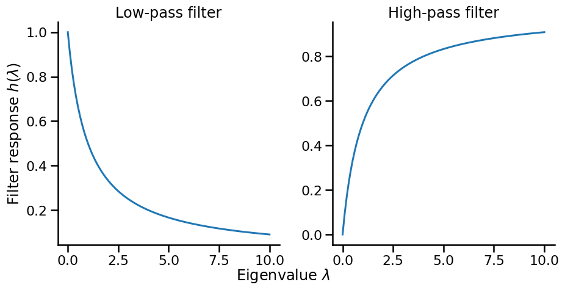

Concepts - From image to graph
0.1 Analogy between image and graph data
We can think of a convolution of an image from the perspective of networks. In the convolution of an image, a pixel is convolved with its neighbors. We can regard each pixel as a node, and each node is connected to its neighboring nodes (pixels) that are involved in the convolution.

Building on this analogy, we can extend the idea of convolution to general graph data. Each node has a pixel value(s) (e.g., feature vector), which is convolved with the values of its neighbors in the graph. This is the key idea of graph convolutional networks. But, there is a key difference: while the number of neighbors for an image is homogeneous, the number of neighbors for a node in a graph can be heterogeneous. Each pixel has the same number of neighbors (except for the boundary pixels), but nodes in a graph can have very different numbers of neighbors. This makes it non-trivial to define the “kernel” for graph convolution.
0.2 Spectral filter on graphs
Just like we can define a convolution on images in the frequency domain, we can also define a ‘’frequency domain’’ for graphs.
Consider a network of N nodes, where each node has a feature variable {\mathbf x}_i \in \mathbb{R}. We are interested in:
J = \frac{1}{2}\sum_{i=1}^N\sum_{j=1}^N A_{ij}(x_i - x_j)^2,
where A_{ij} is the adjacency matrix of the graph. The quantity J represents the total variation of x between connected nodes; a small J means that connected nodes have similar x (low variation; low frequency), while a large J means that connected nodes have very different x (high variation; high frequency).
We can rewrite J as
J = \frac{1}{2}\sum_{i=1}^N\sum_{j=1}^N A_{ij}(x_i - x_j)^2 = {\bf x}^\top {\bf L} {\bf x},
where {\bf L} is the Laplacian matrix of the graph given by
L_{ij} = \begin{cases} -1 & \text{if } i \text{ and } j \text{ are connected} \\ k_i & \text{if } i = j \\ 0 & \text{otherwise} \end{cases}.
and {\bf x} = [x_1,x_2,\ldots, x_N]^\top is a column vector of feature variables.
Detailed derivation
The above derivation shows that the total variation of x between connected nodes is proportional to {\bf x}^\top {\bf L} {\bf x}.
\begin{aligned} J &= \frac{1}{2}\sum_{i=1}^N\sum_{j=1}^N A_{ij}(x_i - x_j)^2 \\ &= \frac{1}{2}\sum_{i=1}^N\sum_{j=1}^N \underbrace{A_{ij}\left( x_i^2 +x_j^2\right)}_{\text{symmetric}} - \sum_{i=1}^N\sum_{j=1}^N A_{ij}x_ix_j \\ &= \sum_{i=1}^Nx_i^2\underbrace{\sum_{j=1}^N A_{ij}}_{\text{degree of node } i, k_i} - \sum_{i=1}^N\sum_{j=1}^N A_{ij}x_ix_j \\ &= \sum_{i=1}^Nx_i^2 k_i - \sum_{i=1}^N\sum_{j=1}^N A_{ij}x_ix_j \\ &= \underbrace{[x_1,x_2,\ldots, x_N]}_{{\bf x}} \underbrace{\begin{bmatrix} k_1 & 0 & \cdots & 0 \\ 0 & k_2 & \cdots & 0 \\ \vdots & \vdots & \ddots & \vdots \\ 0 & 0 & \cdots & k_N \end{bmatrix}}_{{\bf D}} \underbrace{\begin{bmatrix} x_1 \\ x_2 \\ \vdots \\ x_N \end{bmatrix}}_{{\bf x}} - 2\underbrace{\sum_{i=1}^N\sum_{j=1}^N A_{ij}}_{{\bf x}^\top {\mathbf A} {\bf x}} {\bf x} \\ &= {\bf x}^\top {\bf D} {\bf x} - {\bf x}^\top {\mathbf A} {\bf x} \\ &= {\bf x}^\top {\bf L} {\bf x}, \end{aligned}
Let us showcase the analogy between the Fourier transform and the Laplacian matrix. In the Fourier transform, a signal is decomposed into sinusoidal basis functions. Similarly, for a graph, we can decompose the variation J into eigenvector bases.
J = \sum_{i=1}^N \lambda_i {\bf x}^\top {\mathbf u}_i {\mathbf u}_i^\top {\bf x} = \sum_{i=1}^N \lambda_i ||{\bf x}^\top {\mathbf u}_i||^2.
where {\mathbf u}_i is the eigenvector corresponding to the eigenvalue \lambda_i. ^_i)$ is a dot-product between the feature vector {\bf x} and the eigenvector {\mathbf u}_i, which measures how much {\bf x} coheres with eigenvector {\mathbf u}_i, similar to how Fourier coefficients measure coherency with sinusoids. - Each ||{\bf x}^\top {\mathbf u}_i||^2 is the ‘’strength’’ of {\bf x} with respect to the eigenvector {\mathbf u}_i, and the total variation J is a weighted sum of these strengths.
Some eigenvectors correspond to low-frequency components, while others correspond to high-frequency components. For example, the total variation J for an eigenvector {\mathbf u}_i is given by
J = \frac{1}{2} \sum_{j}\sum_{\ell} A_{j\ell}(u_{ij} - u_{i\ell})^2 = {\mathbf u}_i^\top {\mathbf L} {\mathbf u}_i = \lambda_i.
This equation provides key insight into the meaning of eigenvalues:
- For an eigenvector {\mathbf u}_i, its eigenvalue \lambda_i measures the total variation for {\mathbf u}_i.
- Large eigenvalues mean large differences between neighbors (high frequency), while small eigenvalues mean small differences (low frequency).
Thus, if {\bf x} aligns well with {\mathbf u}_i with a large \lambda_i, then {\bf x} has a strong high-frequency component; if {\bf x} aligns well with {\mathbf u}_i with a small \lambda_i, then {\bf x} has strong low-frequency component.
Spectral Filtering
Eigenvalues \lambda_i can be thought of as a filter that controls which frequency components pass through. Instead of using the filter associated with the Laplacian matrix, we can design a filter h(\lambda_i) to control which frequency components pass through. This leads to the idea of spectral filtering. Two common filters are:
- Low-pass Filter: h_{\text{low}}(\lambda) = \frac{1}{1 + \alpha\lambda}
- Preserves low frequencies (small λ)
- Suppresses high frequencies (large λ)
- Results in smoother signals
- High-pass Filter: h_{\text{high}}(\lambda) = \frac{\alpha\lambda}{1 + \alpha\lambda}
- Preserves high frequencies
- Suppresses low frequencies
- Emphasizes differences between neighbors
1 Graph Convolutional Networks
We have seen that spectral filters give us a principled way to think about “convolution” on irregular graph structures, and controlling the frequency components brings out different aspects of the data. We now go one step further: instead of designing filters by hand, we can learn them from data for specific tasks.
1.1 Spectral Graph Convolutional Networks
A simplest form of learnable spectral filter is given by
{\bf L}_{\text{learn}} = \sum_{k=1}^K \theta_k {\mathbf u}_k {\mathbf u}_k^\top,
where {\mathbf u}_k are the eigenvectors and \theta_k are the learnable parameters. The variable K is the number of eigenvectors used (i.e., the rank of the filter). The weight \theta_k is learned to maximize the performance of the task at hand.
Building on this idea, (Bruna et al. 2014) added a nonlinearity to the filter and proposed a spectral convolutional neural network (GCN) by
{\bf x}^{(\ell+1)} = h\left( L_{\text{learn}} {\bf x}^{(\ell)}\right),
where h is an activation function, and {\bf x}^{(\ell)} is the feature vector of the \ell-th convolution. They further extend this idea to convolve on multidimensional feature vectors, {\bf X} \in \mathbb{R}^{N \times f_{\text{in}}} to produce new feature vectors of different dimensionality, {\bf X}' \in \mathbb{R}^{N \times f_{\text{out}}}.
\begin{aligned} {\bf X}^{(\ell+1)}_i &= h\left( \sum_j L_{\text{learn}}^{(i,j)} {\bf X}^{(\ell)}_j\right),\quad \text{where} \quad L^{(i,j)}_{\text{learn}} = \sum_{k=1}^K \theta_{k, (i,j)} {\mathbf u}_k {\mathbf u}_k^\top, \end{aligned}
Notice that the learnable filter L_{\text{learn}}^{(i,j)} is defined for each pair of input i and output j dimensions.
Many GCNs simple when it comes to implementation despite the complicated formula. And this is one of my ways to learn GNNs. Check out the Appendix for the Python implementation.
1.2 From Spectral to Spatial
Spectral GCNs are mathematically elegant but have two main limitations: 1. Computational Limitation: Computing the spectra of the Laplacian is expensive {\cal O}(N^3) and prohibitive for large graphs 2. Spatial Locality: The learned filters are not spatially localized. A node can be influenced by all other nodes in the graph.
These two limitations motivate the development of spatial GCNs.
ChebNet
ChebNet (Defferrard, Bresson, and Vandergheynst 2016) is one of the earliest spatial GCNs that bridges the gap between spectral and spatial domains. The key idea is to leverage Chebyshev polynomials to approximate {\bf L}_{\text{learn}} by
{\bf L}_{\text{learn}} \approx \sum_{k=0}^{K-1} \theta_k T_k(\tilde{{\bf L}}), \quad \text{where} \quad \tilde{{\bf L}} = \frac{2}{\lambda_{\text{max}}}{\bf L} - {\bf I},
where \tilde{{\bf L}} is the scaled and normalized Laplacian matrix in order to have eigenvalues in the range of [-1,1]. The Chebyshev polynomials T_k(\tilde{{\bf L}}) transforms the eigenvalues \tilde{{\bf L}} to the following recursively:
\begin{aligned} T_0(\tilde{{\bf L}}) &= {\bf I} \\ T_1(\tilde{{\bf L}}) &= \tilde{{\bf L}} \\ T_k(\tilde{{\bf L}}) &= 2\tilde{{\bf L}} T_{k-1}(\tilde{{\bf L}}) - T_{k-2}(\tilde{{\bf L}}) \end{aligned}
We then replace {\bf L}_{\text{learn}} in the original spectral GCN with the Chebyshev polynomial approximation:
{\bf x}^{(\ell+1)} = h\left( \sum_{k=0}^{K-1} \theta_k T_k(\tilde{{\bf L}}){\bf x}^{(\ell)}\right),
where: - T_k(\tilde{{\bf L}}) applies the k-th Chebyshev polynomial to the scaled Laplacian matrix - \theta_k are the learnable parameters - K is the order of the polynomial (typically small, e.g., K=3)
Graph Convolutional Networks by Kipf and Welling
While ChebNet offers a principled way to approximate spectral convolutions, Kipf and Welling (2017) (Kipf and Welling 2017) proposed an even simpler and highly effective variant called Graph Convolutional Networks (GCN).
First-order Approximation
The key departure is to use the first-order approximation of the Chebyshev polynomials.
g_{\theta'} * x \approx \theta'_0x + \theta'_1(L - I_N)x = \theta'_0x - \theta'_1D^{-\frac{1}{2}}AD^{-\frac{1}{2}}x
This is crude approximation but it leads to a much simpler form, leaving only two learnable parameters, instead of K parameters in the original ChebNet.
Additionally, they further simplify the formula by using the same \theta for both remaining parameters (i.e., \theta_0 = \theta and \theta_1 = -\theta). The result is the following convolutional filter:
g_{\theta} * x \approx \theta(I_N + D^{-\frac{1}{2}}AD^{-\frac{1}{2}})x
While this is a very simple filter, one can stack multiple layers of convolutions to perform high-order graph convolutions.
Deep GCNs can suffer from over-smoothing
GCN models can be deep, and when they are too deep, they start suffering from an ill-posed problem called gradient vanishing/exploding, where the gradients of the loss function becomes too small or too large to update the model parameters. It is a common problem in deep learning.
To facilitate the training of deep GCNs, the authors introduce a very simple trick called renormalization. The idea is to add self-connections to the graph:
\tilde{A} = A + I_N, \quad \text{and} \quad \tilde{D}_{ii} = \sum_j \tilde{A}_{ij}
And use \tilde{A} and \tilde{D} to form the convolutional filter.
Altogether, this leads to the following layer-wise propagation rule:
X^{(\ell+1)} = \sigma(\tilde{D}^{-\frac{1}{2}}\tilde{A}\tilde{D}^{-\frac{1}{2}}X^{(\ell)}W^{(\ell)})
where: - X^{(\ell)} is the matrix of node features at layer \ell - W^{(\ell)} is the layer’s trainable weight matrix - \sigma is a nonlinear activation function (e.g., ReLU)
These simplifications offer several advantages: - Efficiency: Linear complexity in number of edges - Localization: Each layer only aggregates information from immediate neighbors - Depth: Fewer parameters allow building deeper models - Performance: Despite (or perhaps due to) its simplicity, it often outperforms more complex models
Exercise
Let’s implement a simple GCN model for node classification. Coding Exercise
2 Popular Graph Neural Networks
In this note, we will introduce three popular GNNs: GraphSAGE, Graph Attention Networks (GAT), and Graph Isomorphism Network (GIN).
2.1 GraphSAGE: Sample and Aggregate
GraphSAGE (Hamilton, Ying, and Leskovec 2017) introduced a different GCN that can be generalized to unseen nodes (they called it “inductive”). While previous approaches like ChebNet and GCN operate on the entire graph, GraphSAGE proposes an inductive framework that generates embeddings by sampling and aggregating features from a node’s neighborhood.

Key Ideas
GraphSAGE involves two key ideas: (1) sampling and (2) aggregation.
Neighborhood Sampling
The key idea is the neighborhood sampling. Instead of using all neighbors, GraphSAGE samples a fixed-size set of neighbors for each node. This controls memory complexity, a key limitation of the previous GNNs.
Another key advantage of neighborhood sampling is that it enables GraphSAGE to handle dynamic, growing networks. Consider a citation network where new papers (nodes) are continuously added. Traditional GCNs would need to recompute filters for the entire network with each new addition. In contrast, GraphSAGE can immediately generate embeddings for new nodes by simply sampling their neighbors, without any retraining or recomputation.
Aggregation
Another key idea is the aggregation. GraphSAGE makes a distinction between self-information and neighborhood information. While previous GNNs treat them equally and aggregate them, GraphSAGE treats them differently. Specifically, GraphSAGE introduces an additional step: it concatenates the self-information and the neighborhood information as the input of the convolution.
Z_v = \text{CONCAT}(X_v, X_{\mathcal{N}(v)})
where X_v is the feature of the node itself and X_{\mathcal{N}(v)} is the aggregation of the features of its neighbors. GraphSAGE introduces different ways to aggregate information from neighbors:
X_{\mathcal{N}(v)} = \text{AGGREGATE}_k(\{X_u, \forall u \in \mathcal{N}(v)\})
Common aggregation functions include: - Mean aggregator: \text{AGGREGATE} = \text{mean}(\{h_u, \forall u \in \mathcal{N}(v)\}) - Max-pooling: \text{AGGREGATE} = \max(\{\sigma(W_{\text{pool}}h_u + b), \forall u \in \mathcal{N}(v)\}) - LSTM aggregator: Apply LSTM to randomly permuted neighbors
The concatenated feature Z_v is normalized by the L2 norm.
\hat{Z}_v = \frac{Z_v}{\|Z_v\|_2}
and then fed into the convolution.
X_v^k = \sigma(W^k \hat{Z}_v + b^k)
2.2 Graph Attention Networks (GAT): Differentiate Individual Neighbors
A key innovation of GraphSAGE is to treat the self and neighborhood information differently. But should all neighbors be treated equally? Graph Attention Networks (GAT) address this by letting the model learn which neighbors to pay attention to.
Attention Mechanism

The core idea is beautifully simple: instead of using fixed weights like GCN, let’s learn attention weights \alpha_{ij} that determine how much node i should attend to node j. These weights are computed dynamically based on node features:
\alpha_{ij} = \frac{\exp(e_{ij})}{\sum_{k \in \mathcal{N}(i)} \exp(e_{ik})}
where e_{ij} represents the importance of the edge between node i and node j. Variable e_{ij} is a learnable parameter and can be negative, and the exponential function is applied to transform it to a non-negative value, with the normalization term \sum_{k \in \mathcal{N}(i)} \exp(e_{ik}) to ensure the weights sum to 1.
How to compute e_{ij}? One simple choice is to use a neural network with a shared weight matrix W and a LeakyReLU activation function. Specifically:
- Let’s focus on computing e_{ij} for node i and its neighbor j.
- We use a shared weight matrix W to transform the features of node i and j. \mathbf{\tilde h}_i = \mathbf{h}_i, \quad \mathbf{\tilde h}_j = W\mathbf{h}_j
- We concatenate the transformed features and apply a LeakyReLU activation function.
e_{ij} = \text{LeakyReLU}(\mathbf{a}^T[\mathbf{\tilde h}_i, \mathbf{\tilde h}_j])
where \mathbf{a} is a trainable parameter vector that sums the two transformed features.
Once we have these attention weights, the node update is straightforward - just a weighted sum of neighbor features:
\mathbf{h}'_i = \sigma\left(\sum_{j \in \mathcal{N}(i) \cup \{i\}} \alpha_{ij}{\bf W}_{\text{feature}}\mathbf{h}_j\right)
where {\bf W}_{\text{feature}} is a trainable weight matrix. To stabilize training, GAT uses multiple attention heads and concatenates their outputs:
\mathbf{h}'_i = \parallel_{k=1}^K \sigma\left(\sum_{j \in \mathcal{N}(i) \cup \{i\}} \alpha_{ij}^k{\bf W}^k_{\text{feature}}\mathbf{h}_j\right)
2.3 Graph Isomorphism Network (GIN): Differentiate the Aggregation
Graph Isomorphism Networks (GIN) is another popular GNN that born out of a question: what is the maximum discriminative power achievable by Graph Neural Networks? The answer lies in its theoretical connection to the Weisfeiler-Lehman (WL) test, a powerful algorithm for graph isomorphism testing.
Weisfeiler-Lehman Test
Are two graphs structurally identical? Graph isomorphism testing determines if two graphs are structurally identical, with applications in graph classification, clustering, and other tasks.

While the general problem has no known polynomial-time solution, the WL test is an efficient heuristic that works well in practice. The WL test iteratively refines node labels by hashing the multiset of neighboring labels

The WL test works as follows:
- Assign all nodes the same initial label.
- For each node, collect the labels of all its neighbors and aggregate them into a hash (e.g., new label). For example, the top node gets {0} from its neighbors, resulting in a collection {0,0}. A new label is created via a hash function h that maps {0, {0, 0}} to a new label 1.
- Repeat the process for a fixed number of iterations or until convergence. å After these iterations:
- Nodes with the same label are structurally identical, meaning that they are indistinguishable unless we label them differently.
- Two graphs are structurally identical if and only if they have the same node labels after the WL test.
The WL test is a heuristic and can fail on some graphs. For example, it cannot distinguish regular graphs with the same number of nodes and edges.
The WL test above is called the 1-WL test. There are higher-order WL tests that can distinguish more graphs, which are the basis of advanced GNNs. Check out this note
GIN
GIN (Xu et al. 2019) is a GNN that is based on the WL test. The key idea is to focus on the parallel between the WL test and the GNN update rule. - In the WL test, we iteratively collect the labels of neighbors and aggregate them through a hash function. - In the GraphSAGE and GAT, the labels are the nodes’ features, and the aggregation is some arithmetic operations such as mean or max.
The key difference is that the hash function in the WL test always distinguishes different sets of neighbors’ labels, while the aggregation in GraphSAGE and GAT does not always do so. For example, if all nodes have the same feature (e.g., all 1), the aggregation by the mean or max will result in the same value for all nodes, whereas the hash function in the WL test can still distinguish different sets of neighbors’ labels by the count of each label.
The resulting convolution update rule is:
h_v^{(k+1)} = \text{MLP}^{(k)}\left((1 + \epsilon^{(k)}) \cdot h_v^{(k)} + \sum_{u \in \mathcal{N}(v)} h_u^{(k)}\right)
where \text{MLP}^{(k)} is a multi-layer perceptron (MLP) with k layers, and \epsilon^{(k)} is a fixed or trainable parameter.
References
Bruna, Joan, Wojciech Zaremba, Arthur Szlam, and Yann LeCun. 2014. “Spectral Networks and Locally Connected Networks on Graphs.” In 2nd International Conference on Learning Representations, ICLR 2014, Banff, AB, Canada, April 14-16, 2014, Conference Track Proceedings, edited by Yoshua Bengio and Yann LeCun. http://arxiv.org/abs/1312.6203.
Defferrard, Michaël, Xavier Bresson, and Pierre Vandergheynst. 2016. “Convolutional Neural Networks on Graphs with Fast Localized Spectral Filtering.” Advances in Neural Information Processing Systems 29.
Hamilton, William L., Rex Ying, and Jure Leskovec. 2017. “Inductive Representation Learning on Large Graphs.” In Proceedings of the 31st International Conference on Neural Information Processing Systems, 1025–35. NIPS’17. Red Hook, NY, USA: Curran Associates Inc.
Kipf, Thomas N., and Max Welling. 2017. “Semi-Supervised Classification with Graph Convolutional Networks.” In International Conference on Learning Representations (ICLR).
Xu, Keyulu, Weihua Hu, Jure Leskovec, and Stefanie Jegelka. 2019. “How Powerful Are Graph Neural Networks?” In International Conference on Learning Representations. https://openreview.net/forum?id=ryGs6iA5Km.